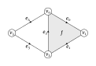

Computing Homology
- Boundary Matrices
- Smith Normal Form
- The Fundamental Theorem of Finitely Generated Abelian Groups
- The Algorithm
Boundary Matrices
Recall from my previous posts that given any simplicial complex $X$ there exist chain groups and boundary operators
$$\cdots\xrightarrow{\partial_{n+1}} C_n(X)\xrightarrow{\partial_n} C_{n-1}(X)\xrightarrow{\partial_{n-1}}\cdots\xrightarrow{\partial_2}C_1(X)\xrightarrow{\partial_1}C_0(X)\xrightarrow{\partial_0}0.$$
The chain groups are all free abelian groups. The $n$th chain group $C_n(X)$ is generated by the set of $n$-simplices in $X$. This set will always be finite, so we are in fact always dealing with finitely generated free abelian groups.
Such groups have a lot in common with finite-dimensional vector spaces, and their homomorphisms have a lot in common with linear maps. The only real difference is that the scalars in free abelian groups are integers, while in vector spaces they are elements of some field (commonly real or complex numbers). That means we can't really do division in free abelian groups, but other than that they are very similar and a lot of the machinery we've developed for linear algebra will work for us here as well.
Just as linear maps between finite-dimensional vector spaces can be represented by matrices with respect to chosen bases, homomorphisms between finitely generated abelian groups can be represented by matrices with respect to their generators.
Definition. Let $G$ and $H$ be free abelian groups with bases $B_G$ of cardinality $n$ and $B_H$ of cardinality $m$. If $f:G\to H$ is a homomorphism then $$f(a_j)=\sum_{i=1}^m\lambda_{ij}b_i$$ for unique integers $\lambda_{ij}$, where $a_j\in B_G$ and $b_i\in B_H$. The matrix $(\lambda_{ij})$ is called the matrix of $f$ relative to the given bases for $G$ and $H$.
I will not bother proving uniqueness of the $\lambda_{ij}$, since it is analogous to the same derivation for linear maps. It makes perfect sense though, since we know that any homomorphism between free abelian groups is uniquely determined by how it acts on generators.
In particular, this provides a nice way to represent boundary maps.
Example. Take again the simplicial complex we used throughout the last two posts:

Then $C_0(X)$ is generated by the basis $\set{v_0, v_1, v_2, v_3}$.
$C_1(X)$ is generated by the basis $\set{e_0, e_1, e_2, e_3, e_4}$.
$C_2(X)$ is generated by the basis $\set{f}$.
Since $\rank C_1(X)=5$ and $\rank C_0(X)=4$, we can represent the boundary map $\partial_1:C_1(X)\to C_0(X)$ as a $5\times 4$ matrix.